Grouped rows, one height
2026-11-07. The sheets' rows became 52px on 2026-11-06; the grouped forms outside a sheet kept 44px. Now every grouped row is 52px, from one token, --grouped-row-min (was --sheet-row-min), read by grouped-settings-rows.css, with --grouped-row-pad (was --sheet-row-pad) for a stacked field. Before (4d5145e) and after, dark and light, at 390 wide.
- One height: Sign in / Sign up, Reset password, New password and Profile, 44 to 52px; a field or menu fills its row.
- The same anatomy and errors as in sheets: one line per field; a field error under the group, outside its surface. Sign in and Reset password errors are about the whole form, so they stay above the fields.
- Nothing else moved: Log result, the Filters sheet and the first screens of Race browse and Results list are pixel-identical; every visible element on those first screens has the same box.
Sign in
Before: Email and Password rows 44px. After: 52px, the sheets' height; the field fills its row.
Create account
The same rows in Create account mode; the hint under the group.


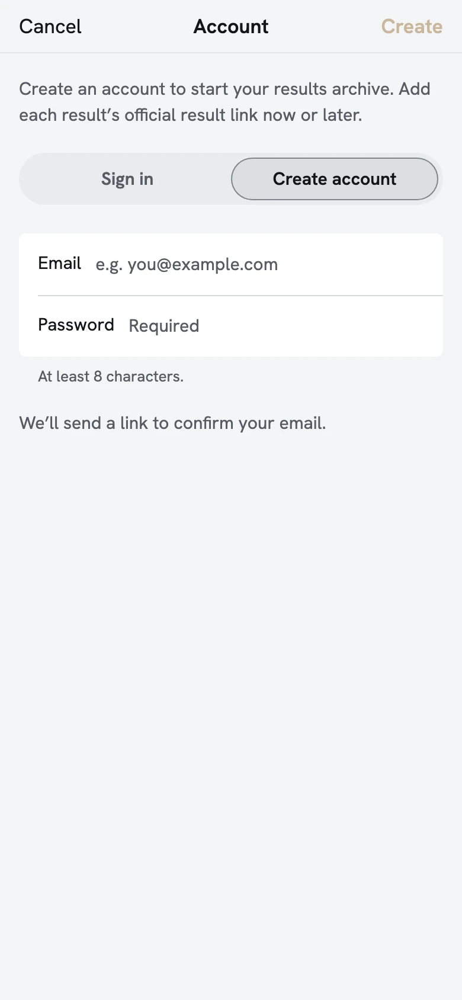
Sign in -error
The error is about the whole form, so it stays the inline error above the fields; the rows 52px.
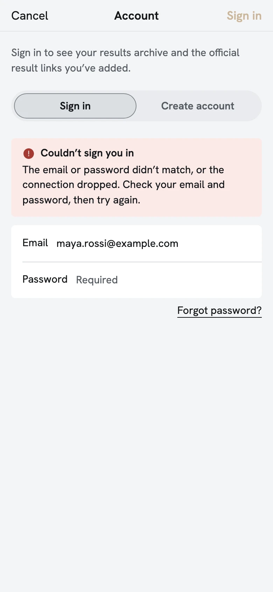
Sign in -loading
Locked while signing in: the same 52px rows, dimmed.
Reset password
One row, 44px before, 52px after.
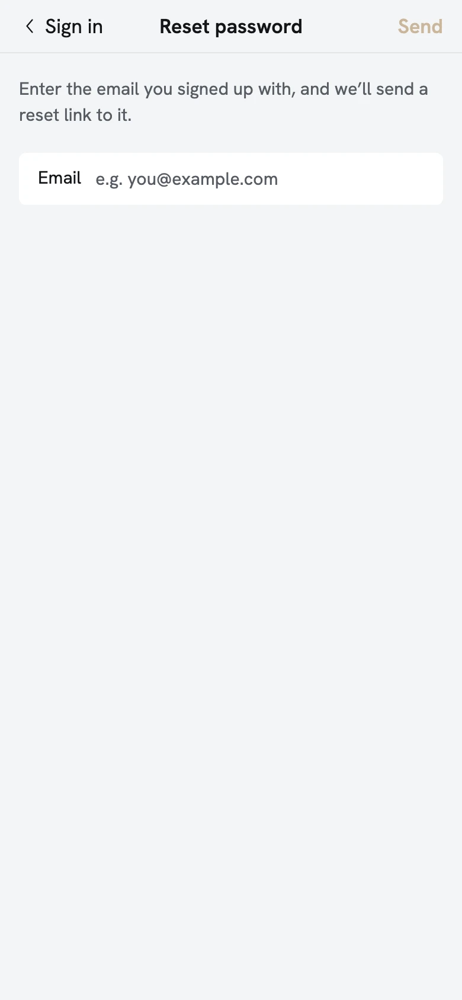
Reset password -error
The inline error above the field (about the request, not the field); the row 52px.
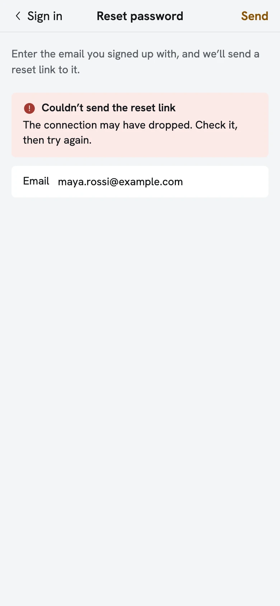
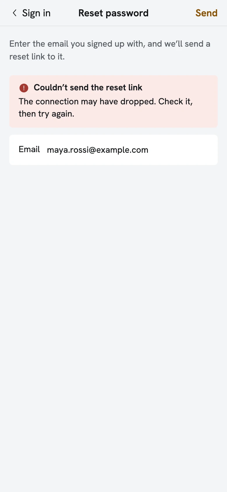
New password
Rows 44px before, 52px after; the hint under the group.
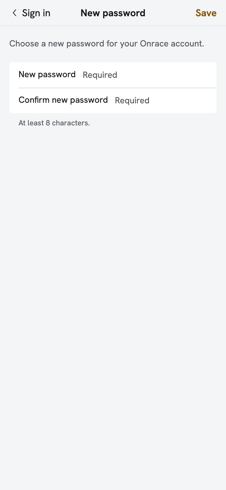
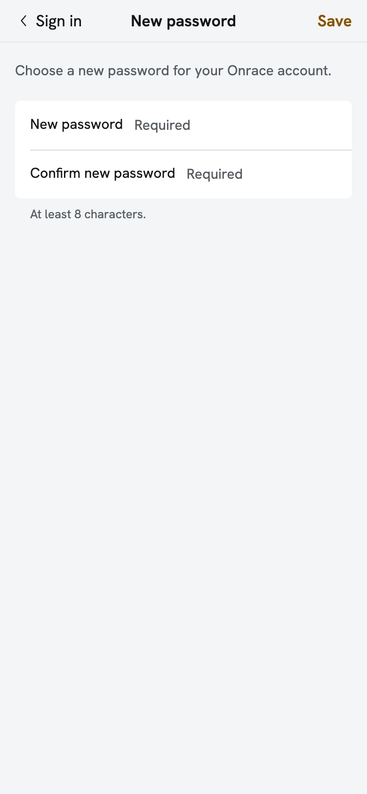
New password -error, too short
The field error under the group, outside its surface; the rows 52px.


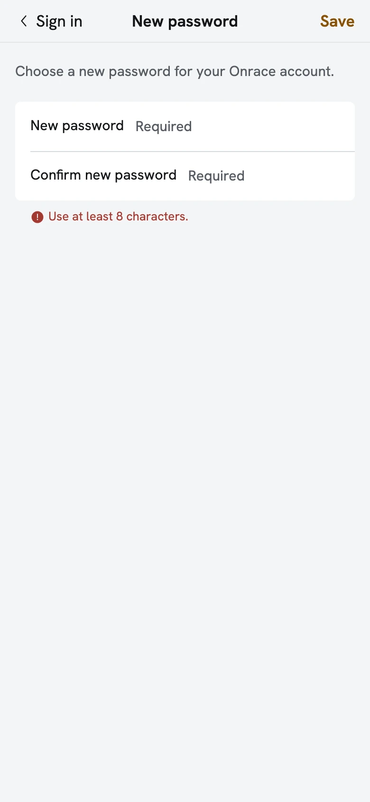
New password -error, no match
The error under the group; New password's hint stays below it.

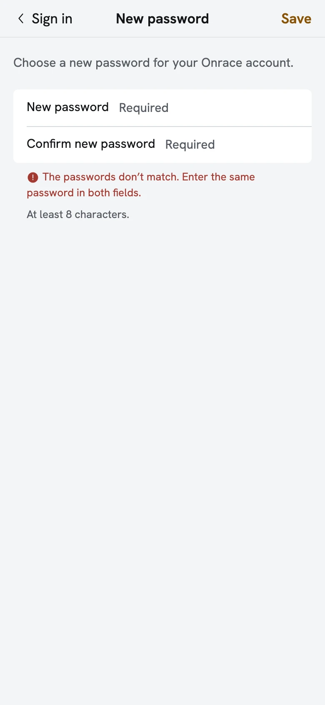
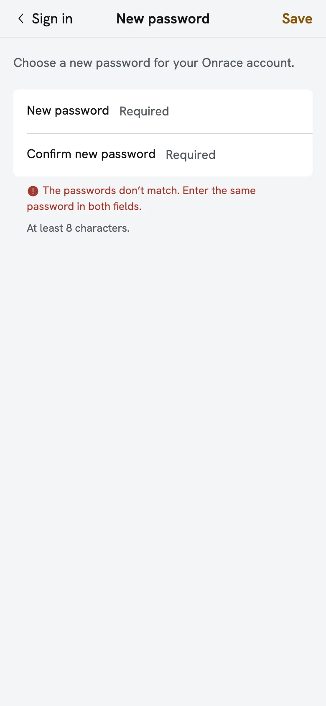
Profile
Before: 44px rows, Email 45.8px. After: every row 52px; values stay right-aligned, as iOS Settings.
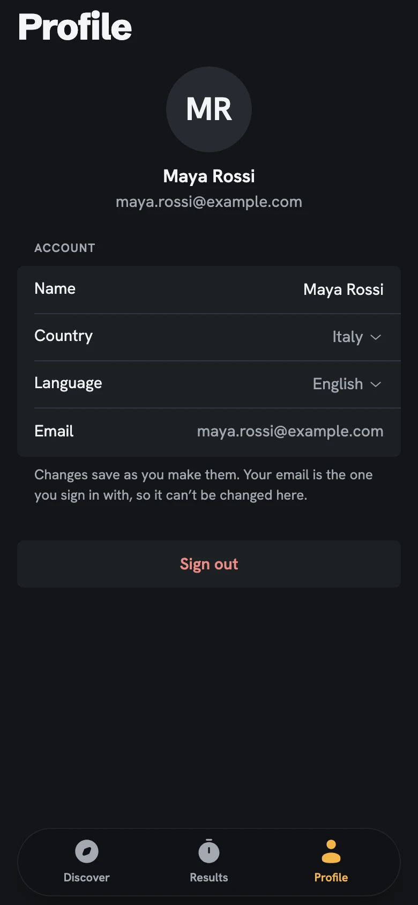
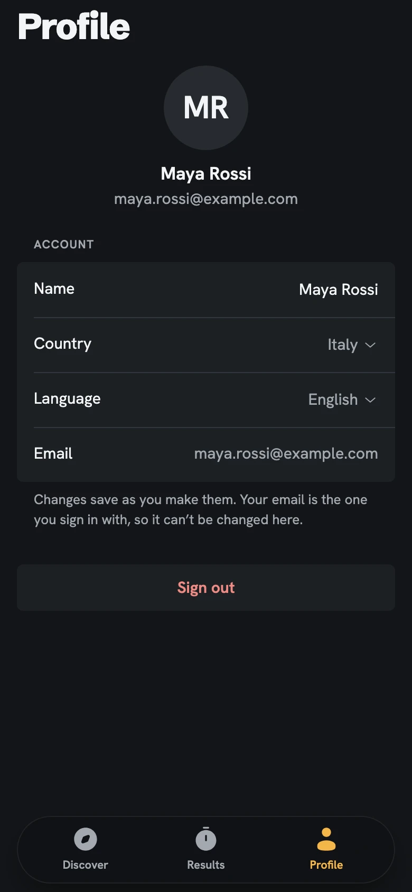
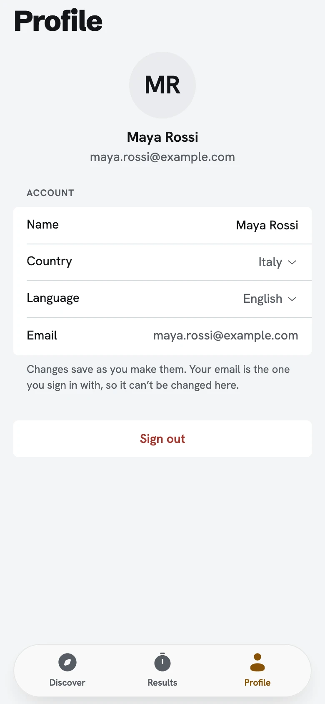

Profile -error, a row didn’t save
The field error under the group with Try again; rows 52px.
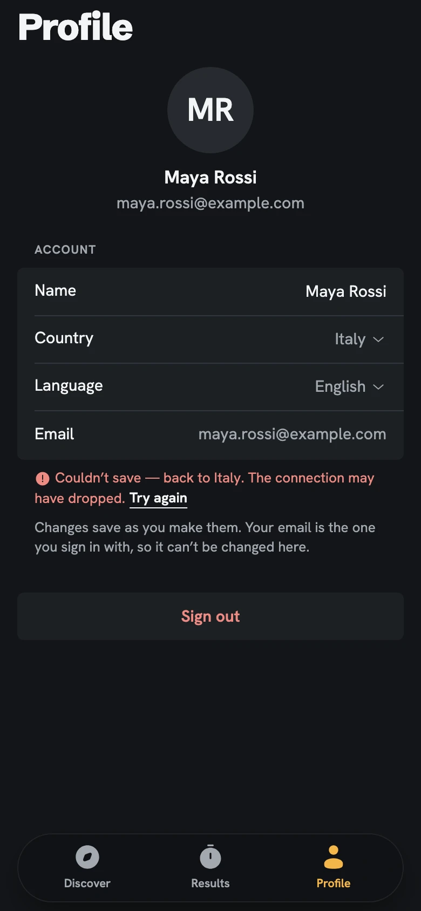
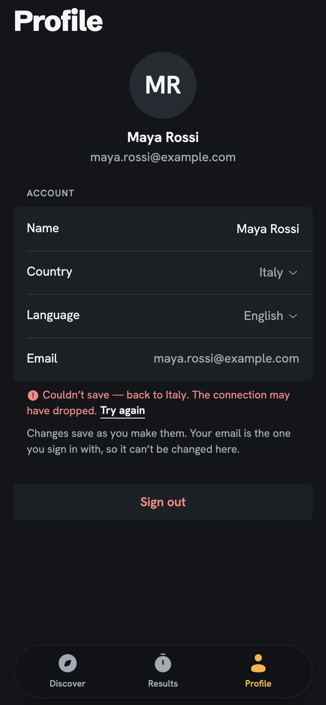
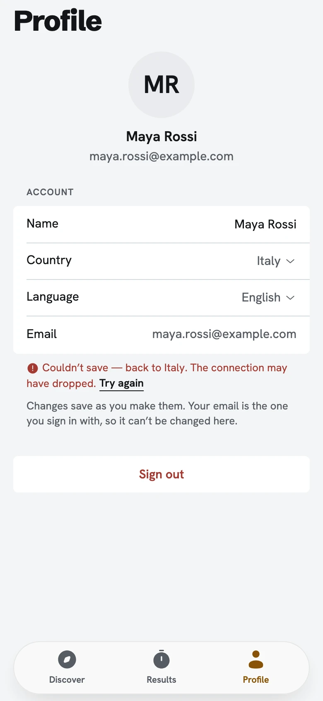
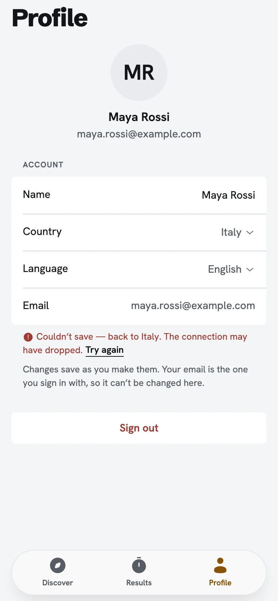
Profile -loading
The placeholder rows take the same 52px, so nothing jumps when the values arrive.

Log result (a sheet, for comparison)
Unchanged: already 52px since 2026-11-06.

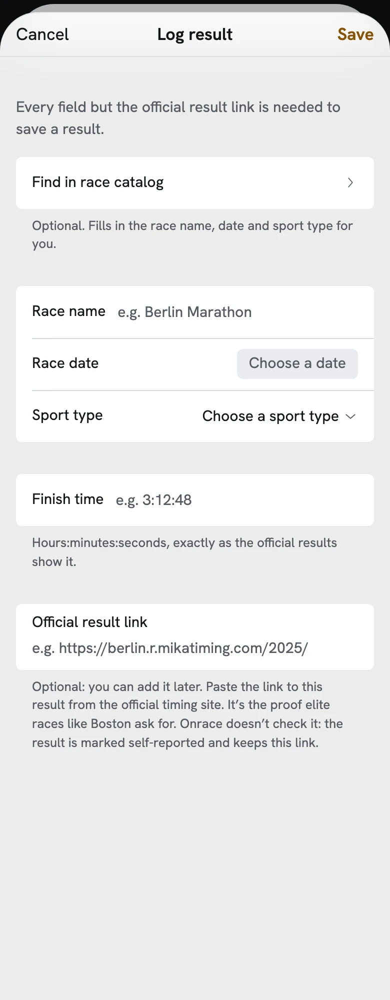
Filters sheet (for comparison)
Unchanged: already 52px.


Race browse, first screen
Unchanged: every visible element measured, the same box before and after.
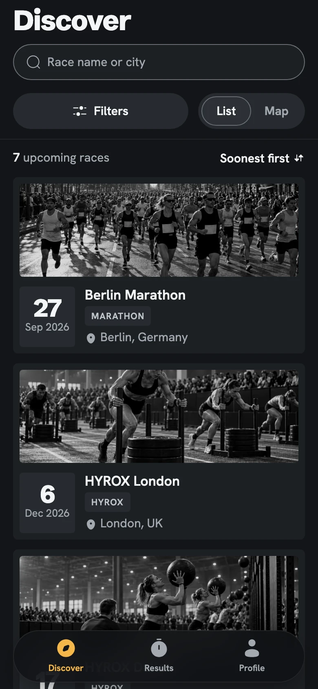
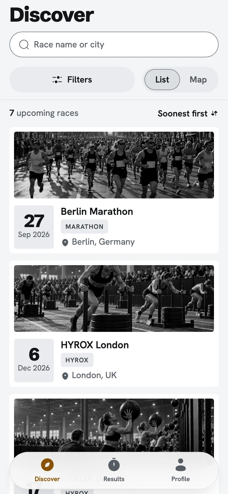
Results list, first screen
Unchanged: every visible element measured, the same box before and after.
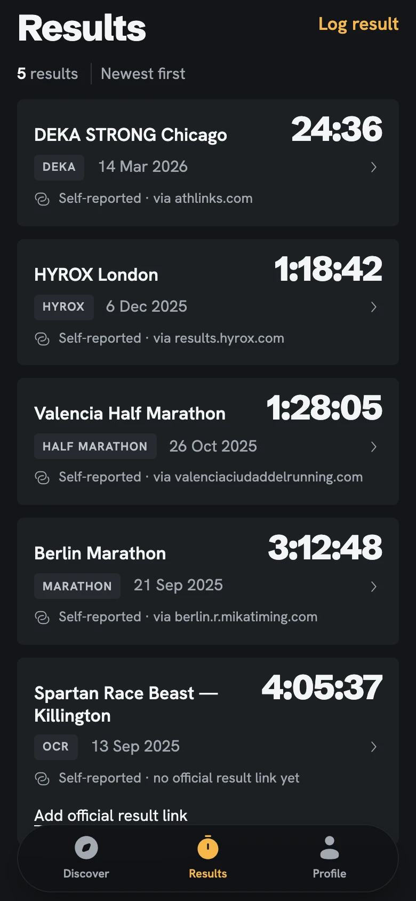
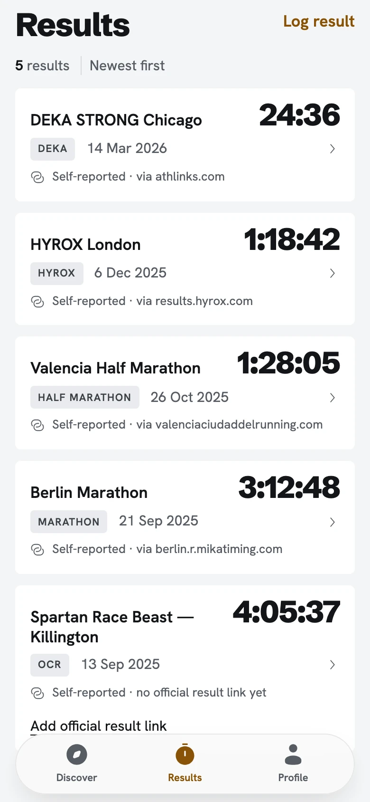